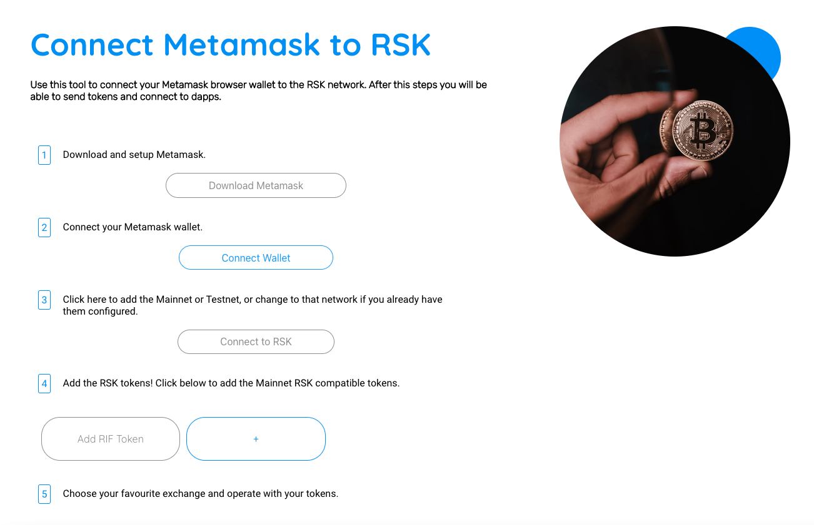
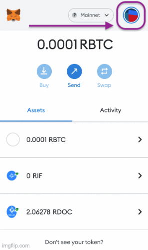
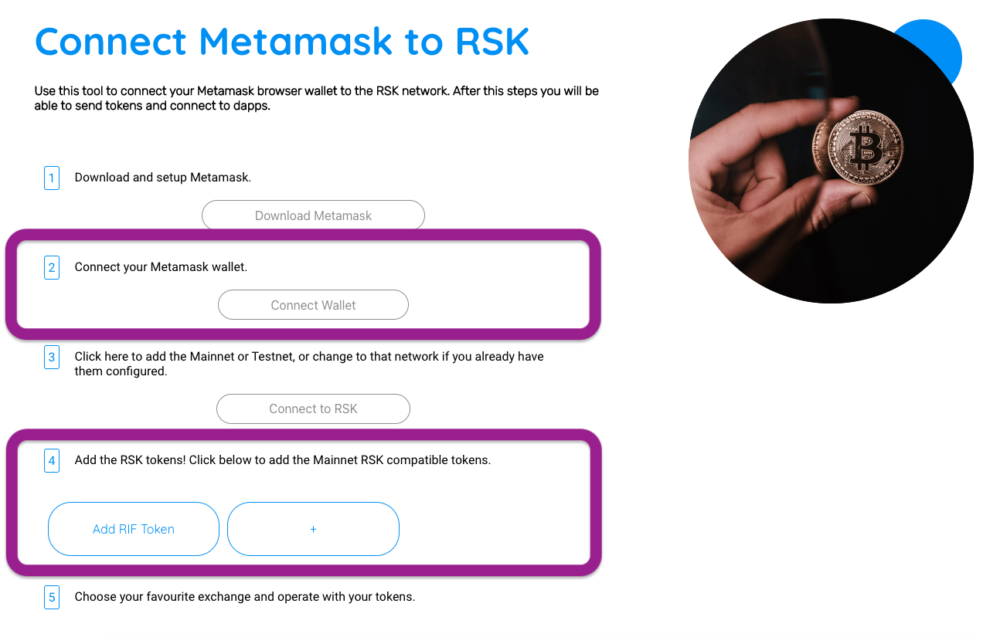

Here are some quick solutions.

MetaMask is a crypto wallet and gateway to blockchain apps. It is available as a browser extension or as a mobile app (iOS and Android). You can find the latest version of MetaMask on their official website: https://metamask.io/

MetaMask allows users to send, receive, store and swap cryptocurrencies, interact with several blockchain ecosystems and provides a simple and secure way to connect to blockchain-based decentralized applications (dApps). It is one of the most widely used crypto applications in the world.

Yes, it is, but with some limitations. MetaMask comes pre-configured with fast connections to the Ethereum blockchain, and is compatible with any blockchain that exposes an Ethereum-compatible JSON RPC API like Rootstock does. You will need to set the RSK network as a Custom RPC to start interacting with the Rootstock ecosystem.

For MetaMask installation, please visit their official website (https://metamask.io/) and install the latest version. You will be asked to choose between creating a new wallet account or importing an existing wallet.
You can follow the steps to do it in this video tutorial:

After installing MetaMask's browser extension or mobile app, you will need to add the Rootstock (RSK) network as a Custom RPC. There are two ways to do it:
1. Using the RIF tool (easy way)
NOTE: This method only works with the browser extension.
Open https://metamask-landing.rifos.org/ and follow the instructions there. You will also be able to add most of the tokens living in the Rootstock blockchain to MetaMask.
2. Manually from Metamask
Go to the network selector (top right corner) and choose “Add Network”. Then, complete the required fields with the following configuration depending on the network you want to connect (Mainnet or Testnet):
| Field | Rootstock Mainnet | Rootstock Testnet |
|---|---|---|
| Network Name | Rootstock Mainnet | Rootstock Testnet |
| RPC URL | https://public-node.rsk.co | https://public-node.testnet.rsk.co |
| ChainID | 30 | 31 |
| Symbol | RBTC | tRBTC |
| Block explorer URL | https://explorer.rsk.co | https://explorer.testnet.rsk.co |
You can follow the steps to do it in this video tutorial:

Yes. If you have an account, you can import it with your private key or a private key JSON file.
NOTE: Imported Accounts are accounts you import using a private key string or a private key JSON file, and were not created with the same Secret Recovery Phrase as your wallet and accounts. The data associated with your MetaMask Secret Recovery Phrase cannot be added or extended to the imported account.
Always remember to back up the recovery phrase and never share it with anyone.
If you have your Secret Recovery Phrase (also known as 'Seed Phrase') you can restore your wallet during setup from a fresh install of MetaMask or restore it from an existing installation. Please keep in mind that this process is not equivalent to importing an account using a private key or private key JSON file.
⚠️ WARNING: Importing a Secret Recovery Phrase into an instance of MetaMask will ERASE all existing MetaMask data.

To backup your MetaMask Secret Recovery Phrase follow these steps:
1. Open MetaMask and click on the main menu at the top right.
2. Click "Settings" and then click "Security & Privacy".
3. Click on "Reveal Secret Security Phrase".
4. Enter your MetaMask wallet password and then click "Next".
5. Click "Copy to clipboard" or "Save as CSV File".
NOTE: Always remember to backup the recovery phrase and save it in a safe place. Never share it with anyone.

Yes, you can use the same MetaMask wallet on both browser’s extension and mobile app. You will need to install MetaMask and follow the restoring steps explained above using your Secret Recovery Phrase.
⚠️ Remember to keep your Secret Recovery Phrase in a safe place and never share it with anyone. If any application or extension unexpectedly asks you for your Secret Recovery Phrase, make sure you’re in the right place.

There are two ways to do it:
1. Using the RIF tool (easy way)
NOTE: This method only works with the browser extension.
Open https://metamask-landing.rifos.org/ and connect your MetaMask wallet. On the Step 4 you will be able to add RIF token and most of the tokens living on the Rootstock blockchain.
2. Manually from Metamask
You can add custom tokens manually following these steps:
1.Click on 'Import tokens', located at the bottom of the 'Assets' tab on your wallet homepage.

2.In the 'Custom token' view, enter the Token Contract Address, Token Symbol and Token Decimal of the custom token you want to add. Please remember to always check and be sure about the token information.

Here you have a video tutorial showing how to add tRIF token to MetaMask:

MetaMask does not charge fees for transactions. However, users will need to pay transaction cost fees (Gas) which are charged by the network. In each blockchain there is a particular currency with which the transaction cost is paid. On Rootstock is RBTC, on Ethereum is ETH, on Binance Smart Chain is BNB, etc.

For MetaMask’s related issues reach out:
Website: https://metamask.io/
Support: https://metamask.zendesk.com/hc/en-us
Forum: https://community.metamask.io/
Twitter: https://twitter.com/metamask/